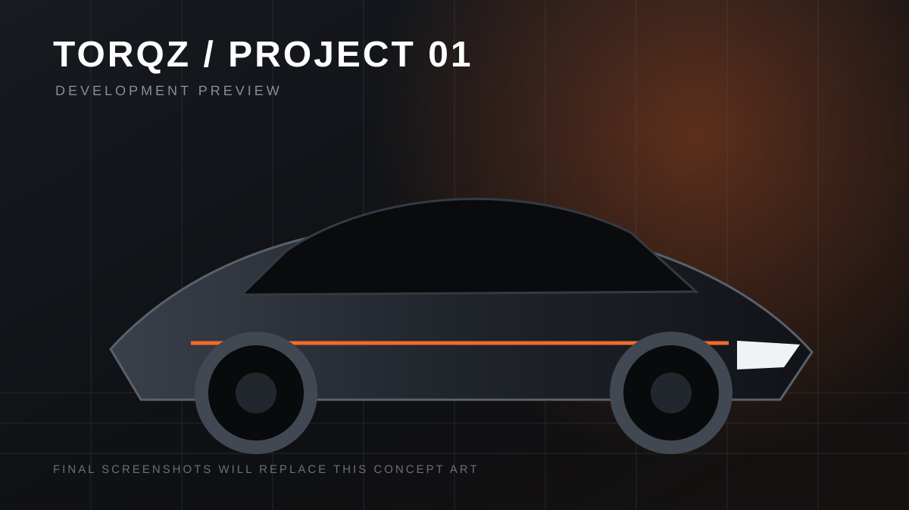

Built for BeamNG.
Made to stand out.
Torqz Mods is building a focused home for high-quality BeamNG.drive projects — with polished previews, honest compatibility notes, clean installation help, and releases that are easy to trust.

Current Torqz project
The library stays honest while Torqz is young. No invented mods, fake download counts, or made-up release dates.
A mod site should feel as finished as the mod.
Torqz is designed around clear information and strong presentation — not noise, fake metrics, or download-button clutter.
About Torqz Mods →Release information you can trust
Version, compatibility, file size, changelog, and known details are shown only when they are verified.
Built around real project media
Concept artwork is clearly labeled and designed to be replaced by proper in-game screenshots when a project is ready.
Support without the maze
Installation, bug reporting, suggestions, and Discord support each have a clear place instead of being buried.
Built to grow with every release
The structure is ready for new categories without turning the homepage into a cluttered file dump.
Install it right. Fix problems faster.
A dedicated support area keeps installation help, bug reports, common questions, and community links in one place.
Follow development.
The Discord button is already wired into the centralized config. Add the real invite once and it updates across the site.
Join the Torqz Mods Discord →